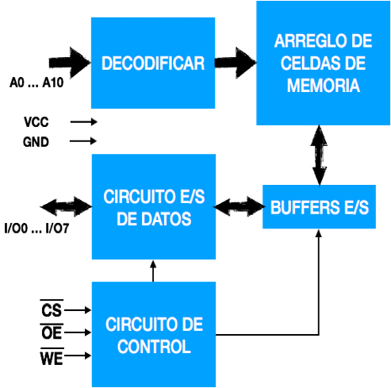

En este proyecto me he basado en un dispositivo denominado 6116, es una memoria de acceso aleatorio, cuenta con una capacidad
de 2048 palabras de 8 bits, sería como decir 2K x 8 bits, es una memoria estática de alta velocidad, está fabricada con la
tecnología CMOS, opera con una fuente de alimentación de +5.0 Volts y está dispuesta en una pastilla de 24 terminales [4].
CARACTERÍSTICAS DE LA MEMORIA RAM 6116
• Organización de la memoria: 2048 X 8 bits o 2k X 8 bits.
• Alta velocidad: tiempo de acceso 150 nseg.
• Baja potencia en estado inactivo: 10 uW.
• Baja potencia en estado activo: 160 mW.
• RAM completamente estática: No requiere reloj para su funcionamiento.
• Temperatura de operación: 0.75 grados centígrados.
• Temperatura de almacenamiento: De -55 a +125 grados centígrados.
• Potencia de disipación: 1 Watts.
• Todas sus entradas y salidas son compatibles directamente con la tecnología Lógica transistor a transistor (TTL).

Figura 2: Diseñado de arquitectura del dispositivo 6116 | Fuente, el autor
En la Figura 2, se pude apreciar la arquitectura interna del dispositivo 6116 el cual va ser usado para realizar el
trabajo de simulación del proceso de asignación de memoria RAM (lectura y escritura).